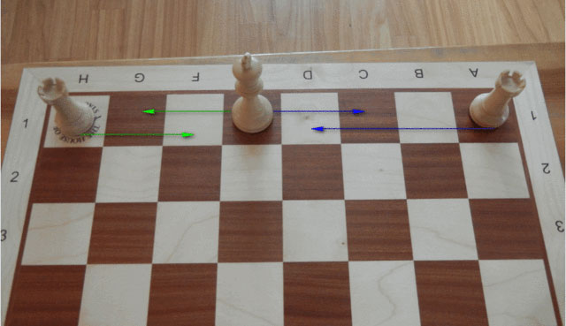
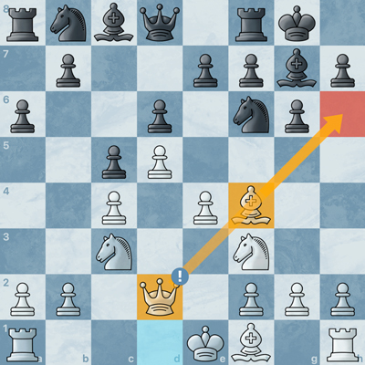

Chess Basic Rules
Chess is played on an 8x8 chessboard with 64 squares, each labeled with a letter (file) and a number (rank), starting from the bottom left for the white player. The bottom-right square must be a light square for both players. Each player starts with 16 pieces: 8 pawns, 2 rooks, 2 knights, 2 bishops, 1 queen, and 1 king.
The pieces are placed in the following order: Two rooks on the corners of the first rank, knights next to the rooks, bishops next to the knights (light-squared bishop on the right, dark-squared on the left), king and queen in the center squares of the first rank, with the queen placed on her matching color square (white queen on white square, black queen on black square). Pawns occupy the entire second rank. Once both sides are set, the setup is perfectly mirrored.
Goal of the Game
Checkmate the enemy king — that is, make sure the king cannot move to any square without being captured. If the king cannot escape and no other piece can prevent the capture, it's checkmate. Other win/loss conditions exist: if a player's time runs out, they lose even if ahead on material, unless the opponent has insufficient mating material, in which case it's a draw (e.g. king vs king, king vs bishop, etc.). If a player purposely makes random fast moves just to flag their opponent (make them lose on time), that’s called “flagging.” It’s legal, though sometimes unsporting. A player can also lose by resignation, which is a respectful and recommended gesture when the game is lost — except at beginner levels, where mistakes are common, or when the opponent has very little time. Draws can occur in various ways: by agreement, if the game is clearly heading to a draw; due to insufficient material for both players to checkmate; if time runs out against a player who has insufficient mating material; or by stalemate, where the opponent has no legal move but is not in check. In rated tournaments, Elo ratings are assigned based on results and opponents' ratings. Elo is also used on chess apps, though unofficial.
Piece Description
King : Moves one square in any direction. Most important piece — if it’s captured, you lose.
Queen : Moves in all directions: vertically, horizontally, and diagonally. Strongest piece — worth 9 points.
Rook : Moves vertically or horizontally. Second heaviest piece — worth 5 points.
Bishop : Moves diagonally. Light piece — worth 3 points. Stronger in open positions.
Knight : Moves in an "L" shape: two squares in one direction, then one perpendicularly. Can jump over other pieces. Worth 3 points, more valuable in closed positions.
Pawn: Moves forward one square (two on its first move), captures diagonally. Worth 1 point, becomes vital in endgames.
Note: These values are indicative. The player with the highest material value doesn't necessarily win.
Special Moves
Castling: Move king and rook at once — king moves two squares toward the rook, and the rook jumps over the king. It protects the king and connects the rooks.
En passant: Special pawn capture when an opponent’s pawn moves two squares forward from its starting square, landing next to your pawn. You can capture it as if it moved only one square — but only immediately after the move.
Promotion: When a pawn reaches the opposite side, it’s promoted to another piece — usually a queen, the strongest.
Basic Strategies
- Control the center: Place or control central squares (e4, d4, e5, d5).
- Develop your pieces: Bring out knights and bishops early. Avoid moving the same piece repeatedly or pushing too many edge pawns.
- Protect your pieces: Every piece should be defended — or it risks being captured for free.
- Protect the king: Castle early. Avoid exposing the king or moving it unnecessarily.
- Don't waste moves: Each move should develop or support your position. Don’t repeat moves without purpose.
- Deliver checks: Force the king to move or make the opponent defend. Well-timed checks can create threats or gain a tempo.
Play games, make mistakes, learn from them. With time, things will become clearer!
Tips for Experienced Players
Even experienced players often forget key details:
Castling: Not allowed if the king is in check, the king or rook has moved, or the king would pass through a threatened square. It’s better to castle to the side with better pawn structure. Queenside castling (long) brings the rook closer to the center but exposes the king more than kingside (short) castling.
Promotion: You can have multiple queens. Promoting is not limited to previously captured pieces.
Key Strategies
Openings: Study a variety of openings with both white (e.g., Queen's Gambit) and black (e.g., Caro-Kann) to control the game from the start. Gambits often involve sacrificing material for faster development.
Centralization: Central pieces have more control and mobility.
Tempo: Every move equals a tempo. Gaining tempo early can give a development advantage. Don’t waste moves.
Coordination: Your pieces should work together — avoid isolating them.
Fianchetto: Develop the bishop to the long diagonal by pushing the side pawn one square. Useful for long-range control — but avoid doing it with both bishops unless necessary.
Pawn structure: A solid pawn structure offers stability. Avoid doubled, isolated, or backward pawns unless you have compensation.
Key tactics
Fork: typically with a knight or queen, but possible also with other pieces, multiple pieces are attacked simultaneously and it is not possible to save them both.
Pin: often with the bishop, it prevents a piece from moving because if it did, it would allow the capture of the king by the pinning piece, an excellent method to get rid of a defender of a square since it cannot be moved. Stronger if it is a crossed pin
Double check: devastating if well planned, often with intermediate sacrifices, by moving a piece you give check to the king with two different pieces.
Discovered attack: moving a piece to reveal a hidden attack, often a discovered check to the king, which, forced to move or block the check with another piece, wastes a move and almost always allows the capture of a piece by the attacker.
Skewer: the opposite of the pin, the piece of higher value is in front of the lower value one and to avoid capture must move, leaving the lower value piece free to be captured (very advantageous if the piece performing the tactic is worth less than the piece it enables to capture).
Trapping: when the opportunity arises, often thanks to our pawn moves, it is possible to trap an opponent’s piece making them play with one less piece and eventually capture it easily when possible. The opponent might try a desperado.
Desperado: When one of our pieces is trapped or destined to be captured we can sacrifice it in exchange for a piece of lower value to gain something from the capture of our piece.
Overload: when noticing that a single piece is defending multiple pieces (defended only by that piece) and we can attack both pieces, we can capture one of them for free, or capture both at the cost of losing one of our pieces.
Deflection: This occurs when we force a piece that was defending a critical square or an important piece to move by threatening its capture. If we capture that piece, we win material since the opponent cannot recapture without losing the more valuable piece it was defending. If the opponent captures instead, we win the piece that was previously being defended, resulting in a favorable exchange. This tactic can also be used to remove a defender of a mating pattern, leading to checkmate, or to gain a positional advantage.
Sacrifice: sacrificing a piece forcing the opponent to move their king towards the center, weakening the king’s defense or reaching a winning situation where victory is possible (e.g. forcing a bishop/rook exchange for queen).
Middlegame and Endgame Principles
- Winning exchange: exchange pieces only if you get a concrete benefit or if you have a material advantage, fewer pieces on the board make it easier to attack when you have more pieces than the opponent.
- Transition: prepare the transition opening → middlegame → endgame maintaining a plan and attacking ideas.
- Connected rooks: optimal for the two rooks to be on the same rank/file without pieces between them so they can protect each other and attack at full potential.
- Battery: it is optimal to attack the same piece or square with multiple pieces, often this happens with batteries (often queen-bishop or queen-rook or rook-rook) where one piece protects the other (happens when pieces are on the same diagonal in the case queen-bishop or on the same rank/file for queen-rook and rook-rook), allowing capturing or controlling a square. The king cannot capture a piece protected by another piece or it would be captured, so batteries are often used to deliver checkmate.
- Control of ranks/files: to win a game it is necessary to control strategic ranks and files with rooks/queen so the opponent's pieces cannot occupy them (e.g. rook on c8 in the Caro-Kann mainline). Fundamental tactic in rook endgames blocking a central file between the king and our pawn preventing the king from crossing and capturing the pawn which can surely promote allowing us to win in few moves.
- Control of diagonals: as with ranks and files, control of diagonals is fundamental to dominate the game. In open positions bishops become very strong since they control diagonals. The strength of a bishop is estimated based on the diagonal it occupies, the longer the diagonal, the stronger the bishop. This is why many choose to fianchetto the bishop.
- Technical endgames: know well all different types of endgames (e.g. Philidor endgame or queen vs rook endings) and how to coordinate them to win.
- Checkmates: knowing well different types of checkmates (e.g. Anastasia's mate) helps to create attacking plans and allows recognizing or creating winning positions.
- Attacking at the right time: punish your opponent for not developing their pieces, moving the same piece multiple times, weakening their defense or having fewer defending pieces compared to your attacking pieces. Apply pressure to the opponent's king/queen often forcing them to lose material or even the game.
- Thinking: why did the opponent make a certain move and how to counter it.
- CCAPDO: Before making a move, always consider whether there is a possibility to check the opponent's king and whether that check is somehow advantageous, or if you must move because you are in check (C). Otherwise, consider the possibility of capturing a piece (C), attacking a piece or square (A), protecting or spotting dangers (PD), then you can start thinking about making other moves (O).
- Stalemate: if you are in an extremely disadvantageous position or want to force a draw, you can try as a last desperate attempt to draw the game by creating a stalemate. You can do this by sacrificing a piece (only when the sacrifice forces a stalemate or if not accepted leads to an advantageous situation for us) or trying to place your king in an uncomfortable position for the opponent so that at their first mistake the game is drawn.
- Crazy queen: there are cases where the queen is the only piece you can move since the king is surrounded but not in check. In this case, you can check the opponent's king indefinitely with the queen (if played optimally without allowing a piece that threatened our king to capture the queen and give escape to the king thus denying the draw) and if the opponent captures the queen, we will have no legal moves and achieve stalemate. If they do not capture the queen, we can continue infinitely denying the opponent victory. Sometimes this tactic can be done with a rook (Crazy rook).
Improvement requires analysis, self-criticism, and constant study. Every game is an opportunity for growth. It is perfectly normal to make mistakes and leave pieces hanging even when you know the theory and how to avoid it. Calculating many moves accurately or carefully scanning the board without missing any detail is not easy, especially when time is tight. So don’t worry, it’s all a matter of practice. Puzzles are highly recommended to improve pattern recognition and board vision, and playing some quick games helps speed up calculation and pattern recognition. It is also important to play Chess960 games, where the initial piece setup is random, to improve calculation skills and frequently find the best move.
Complete Guide to Chess Notation
Chess notation is the official language of chess. It allows players to record, share, and analyze games. It is used by amateurs, arbiters, masters, and world champions alike. Mastering it means being able to read a game like a musician reads a score.
Chessboard Coordinates
The chessboard is made up of 8 files (a–h) and 8 ranks (1–8). The square in the bottom-left corner is a1 (black), and the one in the top-right is h8 (white). Each square is identified by a pair: letter (file) + number (rank).
Example: The central square e4 is on the fifth rank and the fifth file.
Piece Symbols
K= KingQ= QueenR= RookB= BishopN= Knight (N is used instead of K to avoid confusion with the King)- Pawns have no initials: only the destination square is indicated
Standard Move
A move is written as: Piece + destination square.
e4= a pawn moves to square e4Nf3= knight moves to f3Qd8= queen moves to d8
Capture
An x is placed between the piece and the square:
Nxf3= knight captures on f3exd5= pawn from the “e” file captures on d5
Castling
O-O= kingside castlingO-O-O= queenside castling
Promotion
When a pawn reaches the eighth rank, it may be promoted:
e8=Q= pawn promotes to queenc1=N= pawn promotes to knight
Check and Checkmate
+= check (e.g.Qh5+)#or++= checkmate (e.g.Qf7#)
Other Useful Symbols
!= good move!!= excellent move?= dubious move??= blunder!? / ?!= interesting / risky move
How to Read a Game
Games are recorded in algebraic notation, move by move, white and black:
1. e4 e5 2. Nf3 Nc6 3. Bb5 a6 4. Ba4 Nf6 5. O-O Be7
This is the Ruy Lopez opening.
End of the Game
1-0= White wins0-1= Black wins½–½= draw
Chess notation is the key to understanding the minds of masters, analyzing your own play, and preserving immortal games. Learning it is not just about writing correctly: it’s about seeing deeper into every move.
Made by Tursi Christian.
Images
 Chessboard Back to the manual |
 Checkmate Back to the manual |
 Stalemate Back to the manual |
|  Castling Back to the manual |
 Promotion Back to the manual |
 Fork Back to the manual |
 Fianchetto Back to the manual |
 En passant Back to the manual |
|  Battery Back to the manual |
 Crossed pin Back to the manual |
 Deflection Back to the manual |
 Forced stalemate Back to the manual |
 Crazy queen Back to the manual |
Videos
|
Queen's gambit Back to the manual |
|
Caro-kann Back to the manual |
|
Semi-slav |
|
Sicilian defence |
|
Sicilian defence |